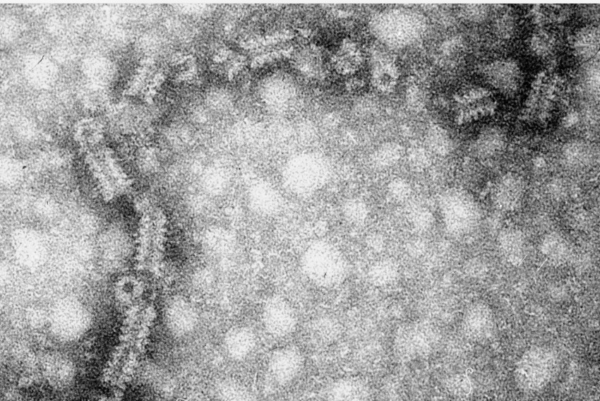
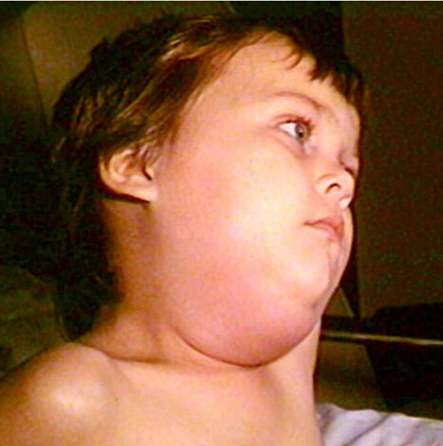
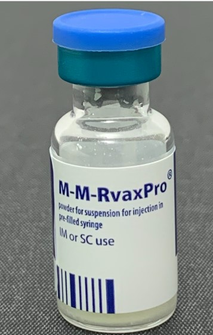

Ιός Παρωτίτιδας (Mumps virus)
Δομημένες σημειώσεις για τον ιό της παρωτίτιδας με βάση τις αναλυτικές σημειώσεις και την παρουσίαση: τι είναι ο ιός, πώς μεταδίδεται, πώς εξελίσσεται η λοίμωξη, ποια όργανα μπορεί να προσβάλει, πώς μπαίνει η διάγνωση και ποιος είναι ο ρόλος του εμβολίου MMR.
Οικογένεια / ομάδα
Παραμυξοϊοί
Γονιδίωμα
RNA ιός
Κύρια νόσος
Παρωτίτιδα
Πρόληψη
Εμβόλιο MMR
1. Βασικά χαρακτηριστικά του ιού
- Ο ιός της παρωτίτιδας είναι RNA ιός.
- Ανήκει στην ομάδα των παραμυξοϊών.
- Αδρανοποιείται από ζέστη, αιθέρα, φορμόλη, χλωροφόρμιο και υπεριώδη ακτινοβολία.
- Προκαλεί την παρωτίτιδα, δηλαδή μία οξεία λοιμώδη ιογενή νόσο με χαρακτηριστική επώδυνη διόγκωση των σιελογόνων αδένων, κυρίως των παρωτίδων.
2. Γλυκοπρωτεΐνες, αντιγόνα και αντισώματα
Γλυκοπρωτεΐνες του ιού
- Αιμοσυγκολλητίνες
- Νευραμινιδάσες
- Αιμολυσίνες
Αντιγόνα
- S (στο εσωτερικό του ιού)
- V (στην επιφάνεια του ιού)
Αντισώματα
- anti-S
- anti-V
Τα αντισώματα έναντι του V αντιγόνου συνδέονται με μόνιμη ανοσία.
3. Ανοσία και απομόνωση του ιού
- Η νόσος αφήνει κατά κανόνα μόνιμη ανοσία.
- Βρέφη μέχρι περίπου 6 μηνών συνήθως δεν παθαίνουν παρωτίτιδα, εφόσον η μητέρα είχε νοσήσει στο παρελθόν.
- Ο ιός μπορεί να απομονωθεί από:
- σάλιο
- ούρα
- φάρυγγα
- ΕΝΥ
4. Παθογένεια
Ο ιός εισέρχεται από το αναπνευστικό.
Πολλαπλασιάζεται στον ρινοφάρυγγα και στους επιχώριους λεμφαδένες.
Ακολουθεί ιαιμία που διαρκεί περίπου 3–5 ημέρες.
Ο ιός διασπείρεται σε πολλούς ιστούς και όργανα.
Η φλεγμονή των προσβεβλημένων ιστών οδηγεί στα κλινικά συμπτώματα και μπορεί να δώσει άσηπτη μηνιγγίτιδα.
5. Όργανα που μπορεί να προσβληθούν
- Σιελογόνοι αδένες και κυρίως παρωτίδες
- Μήνιγγες και γενικότερα ΚΝΣ
- Πάγκρεας
- Όρχεις
- Ωοθήκες
- Μαστοί
- Θυρεοειδής
- Νεφροί
- Οπτικό νεύρο
- Όργανο του Corti
6. Μετάδοση και μεταδοτική περίοδος
Μετάδοση
- Από άτομο σε άτομο με σταγονίδια από το στόμα / αναπνευστικές εκκρίσεις.
- Με αντικείμενα που έχουν πρόσφατα μολυνθεί.
Μεταδοτική περίοδος
Η νόσος μεταδίδεται περίπου 1 εβδομάδα πριν μέχρι και 9 ημέρες μετά την έναρξη της νόσου.
Χρόνος επώασης
Συνήθως 16–18 ημέρες, με εύρος περίπου 12–25 ημέρες.
7. Κλινική εικόνα
| Βασικά ευρήματα | Σημεία που τονίζονται στις σημειώσεις / παρουσίαση |
|---|---|
| Διόγκωση παρωτίδας | Εμφανίζεται περίπου στο 60–70% των λοιμώξεων· στη συμπτωματική νόσο είναι πολύ συχνή. Συνήθως είναι αμφοτερόπλευρη, αν και μπορεί να είναι και ετερόπλευρη. |
| Γενικά συμπτώματα | Πυρετός, κεφαλαλγία, κακουχία, ανορεξία. |
| Διόγκωση άλλων αδένων / οργάνων | Μπορεί να εμφανιστούν επιδιδυμο-ορχίτιδα, μαστίτιδα, παγκρεατίτιδα, θυρεοειδίτιδα. |
| Προσβολή ΚΝΣ | Αναφέρεται προσβολή ΚΝΣ σε σημαντικό ποσοστό ασθενών, αλλά κλινική συμπτωματολογία σε μικρότερο ποσοστό. |
8. Επιπλοκές
- Άσηπτη μηνιγγίτιδα / προσβολή ΚΝΣ
- Επιδιδυμο-ορχίτιδα, ιδιαίτερα μετά την ήβη
- Παγκρεατίτιδα
- Κώφωση λόγω προσβολής του οργάνου του Corti
- Σπανιότερα σοβαρή έκβαση
Στην παρουσίαση υπάρχει και ξεχωριστή διαφάνεια με συχνότητες για ΚΝΣ involvement, orchitis, pancreatitis, deafness και θάνατο.
9. Επιδιδυμο-ορχίτιδα και γονάδες
Η προσβολή των γονάδων είναι ένα από τα πιο κλασικά συστηματικά σύνδρομα της παρωτίτιδας.
- Στους άνδρες μπορεί να εμφανιστεί επιδιδυμο-ορχίτιδα.
- Στις σημειώσεις σου αναφέρεται και ο κίνδυνος στειρότητας.
- Αντίστοιχα μπορεί να υπάρξει προσβολή και των ωοθηκών.
10. Εικόνες



11. Εργαστηριακή διάγνωση
Η παρουσίαση συμπληρώνει το κομμάτι που στις σύντομες σημειώσεις ήταν ανοιχτό.
- Απομόνωση / καλλιέργεια του ιού από:
- σάλιο
- ούρα
- ΕΝΥ
- αίμα
- φάρυγγα
- Ορολογική διάγνωση:
- ειδικά IgM αντισώματα
- άνοδος τίτλου IgG σε διαδοχικά δείγματα
- RT-PCR
12. Πρακτικά σημεία για τη διάγνωση
- Το σάλιο αναφέρεται ως χρήσιμο δείγμα τις πρώτες ημέρες μετά την έναρξη των συμπτωμάτων.
- Ο ιός μπορεί επίσης να αναζητηθεί στα ούρα για μεγαλύτερο διάστημα.
- Σε νευρολογική συμμετοχή έχει σημασία το ΕΝΥ.
- Η ορολογία και η RT-PCR βοηθούν στην επιβεβαίωση της λοίμωξης.
13. Πρόληψη – Εμβόλιο MMR
Η πρόληψη γίνεται με το MMR, δηλαδή το συνδυασμένο εμβόλιο για:
- Ιλαρά
- Παρωτίτιδα
- Ερυθρά
Η παρουσίαση αναφέρει ότι το εμβόλιο περιέχει ζώντες εξασθενημένους ιούς.
Στις διαφάνειες φαίνεται επίσης η κλασική λογική των δύο δόσεων και η σαφής μείωση της επίπτωσης της νόσου μετά τον εμβολιασμό.
14. Τι κρατάς για την παθογένεια
Αναπνευστικό → ρινοφάρυγγας / λεμφαδένες → ιαιμία → διασπορά σε παρωτίδες, ΚΝΣ, πάγκρεας, όρχεις, ωοθήκες και άλλα όργανα.
15. Τι κρατάς για την κλινική εικόνα
Επώδυνη διόγκωση παρωτίδων, συνήθως αμφοτερόπλευρη, με πυρετό, κεφαλαλγία, κακουχία και ανορεξία. Δεν μένει πάντα μόνο στους σιελογόνους αδένες.
16. Τι κρατάς για την πρόληψη
Το MMR είναι το βασικό προληπτικό μέτρο και έχει μειώσει ουσιαστικά τα περιστατικά παρωτίτιδας.